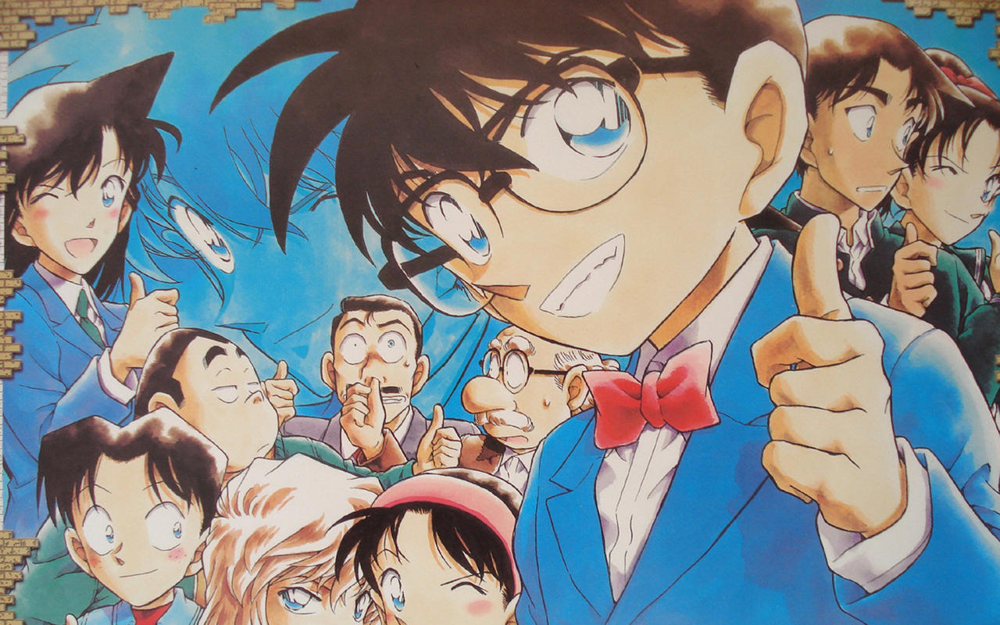
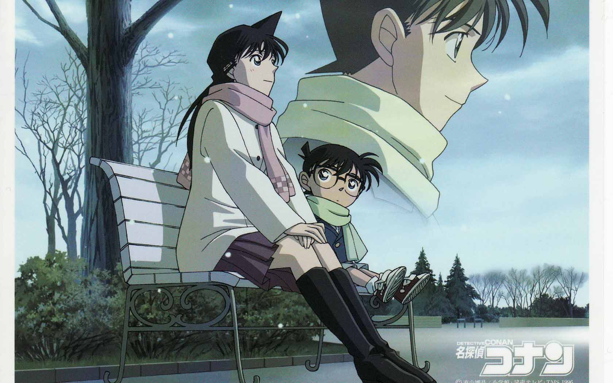
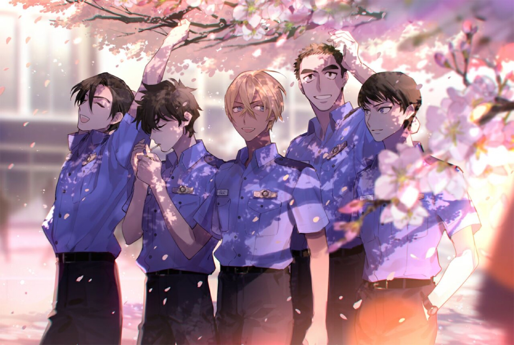
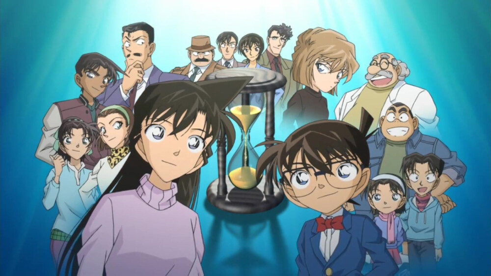
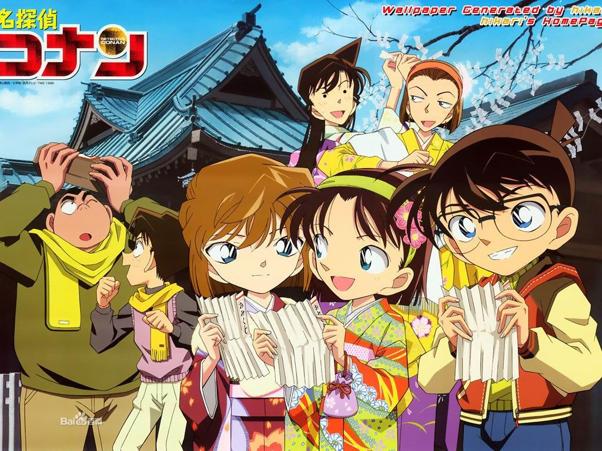
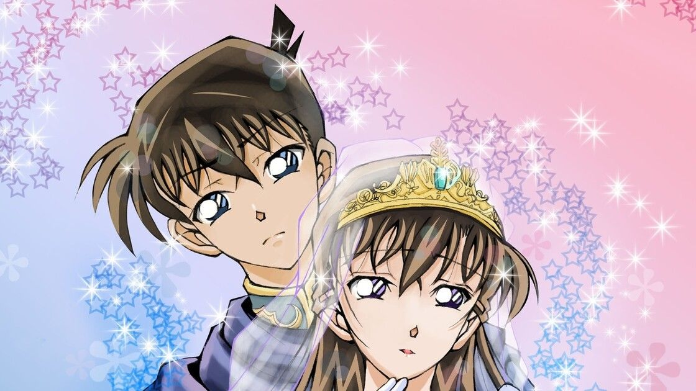

网站首页
漫画介绍
《名侦探柯南》是日本漫画家青山刚昌创作的侦探漫画系列，自1994年开始连载...



其他介绍
除了漫画外，还有动画、剧场版、小说等多种媒体形式...
作品风格
作品以推理为主轴，融合了悬疑、喜剧、爱情等元素...



创作背景
青山刚昌受到福尔摩斯等侦探小说的影响，结合日本社会现象创作...
故事简介
高中生侦探工藤新一被神秘组织灌下毒药后变成小孩，化名江户川柯南...
角色介绍
江户川柯南
本名工藤新一，被组织灌药后变成小孩模样，寄住在毛利侦探事务所...
毛利兰
新一的青梅竹马，空手道高手，不知道柯南的真实身份...
灰原哀
本名宫野志保，原黑衣组织科学家，与柯南同样服药变小...